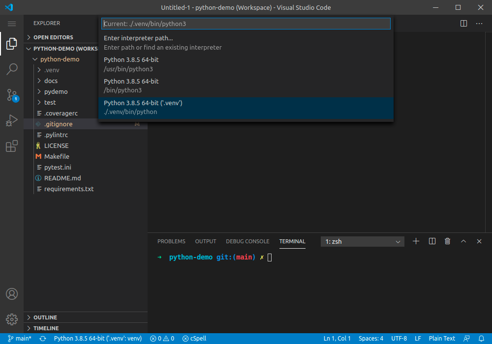

Python in VSCode ¶ Select the interpreter ¶ Before running any script or debugging, you have to select the interpreter to be used. Press F1 and type "Python Select Interpreter". Then select the workspace and choose the interpreter.  Execute a module ¶ Debug a module ¶